rRACES/RACES supports two growth models: the “border”-growth model and the homogeneous-growth model.
The former exclusively admits duplication of cells that have space to duplicate (i.e., cells on the cancer border or near by death cells). The latter allows cell duplications everywhere in the tumor.
The homogeneous-growth model is the default one. However, users can
switch the growth model by assigning the Simulation’s
duplicate_internal_cells Boolean field. By setting it to
TRUE, the homogeneous-growth model is used. If, instead, it
is set to FALSE, the simulation evolves according with the
“border”-growth model.
In the remaining part of this article we clarify the differences between the supported growth models by showing that they produce different evolutions of the very same cancer model.
Homogeneous Growth
First of all we need to create a new Simulation object
and enable duplication of internal cells.
library(rRACES)
sim <- new(Simulation, "Homogeneous Growth")
# Set the homogeneous growth model
sim$duplicate_internal_cells <- TRUE
# Set the death activation level to avoid drift
sim$death_activation_level <- 50Add a mutant A with epigenetic state, let the simulation
evolve until there are 1300 cells of species A+, take two
samples, and let the simulation evolve again for 15 time units.
# Add a mutant
sim$add_mutant(name = "A",
epigenetic_rates = c("+-" = 0.01, "-+" = 0.01),
growth_rates = c("+" = 0.1, "-" = 0.08),
death_rates = c("+" = 0.1, "-" = 0.01))
sim$place_cell("A+", 500, 500)
# Let the simulation evolve until "A+" consists of 1300 cells
sim$run_up_to_size("A+", 1300)
bbox_width <- 15
# Takes two samples
sim$sample_cells("S_1_1",
bottom_left = c(480, 480),
top_right = c(480 + bbox_width, 480 + bbox_width))
sim$sample_cells("S_1_2",
bottom_left = c(500, 500),
top_right = c(500 + bbox_width, 500 + bbox_width))
# Let the simulation evolve again for 15 time units
sim$run_up_to_time(sim$get_clock() + 15)Add a new mutant “B”, let one of the cells in “A” generate a cell in “B”, let the simulation evolve until there are 5000 cells in “B+”, and take again two samples.
sim$add_mutant(name = "B",
epigenetic_rates = c("+-" = 0.05, "-+" = 0.1),
growth_rates = c("+" = 0.8, "-" = 0.3),
death_rates = c("+" = 0.05, "-" = 0.05))
sim$mutate_progeny(sim$choose_cell_in("A"), "B")
sim$run_up_to_size("B+", 5000)
ncells <- 0.9 * bbox_width * bbox_width
bbox <- sim$search_sample("B", ncells, bbox_width, bbox_width)
sim$sample_cells("S_2_1", bbox$lower_corner, bbox$upper_corner)
bbox <- sim$search_sample("A", ncells, bbox_width, bbox_width)
sim$sample_cells("S_2_2", bbox$lower_corner, bbox$upper_corner)Let us have a look at the simulated tissue and plot the simulation Muller plot.
plot_tissue(sim, num_of_bins = 500)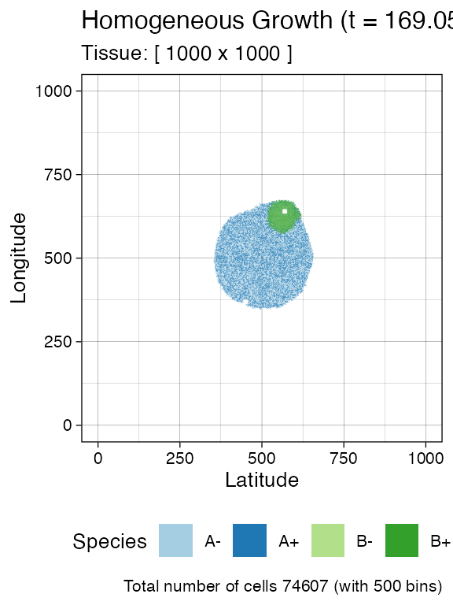
plot_muller(sim)
#> Warning: `filter_()` was deprecated in dplyr 0.7.0.
#> ℹ Please use `filter()` instead.
#> ℹ See vignette('programming') for more help
#> ℹ The deprecated feature was likely used in the ggmuller package.
#> Please report the issue to the authors.
#> This warning is displayed once every 8 hours.
#> Call `lifecycle::last_lifecycle_warnings()` to see where this warning was
#> generated.
#> Warning: `summarise_()` was deprecated in dplyr 0.7.0.
#> ℹ Please use `summarise()` instead.
#> ℹ The deprecated feature was likely used in the ggmuller package.
#> Please report the issue to the authors.
#> This warning is displayed once every 8 hours.
#> Call `lifecycle::last_lifecycle_warnings()` to see where this warning was
#> generated.
#> Warning: `group_by_()` was deprecated in dplyr 0.7.0.
#> ℹ Please use `group_by()` instead.
#> ℹ See vignette('programming') for more help
#> ℹ The deprecated feature was likely used in the ggmuller package.
#> Please report the issue to the authors.
#> This warning is displayed once every 8 hours.
#> Call `lifecycle::last_lifecycle_warnings()` to see where this warning was
#> generated.
#> Warning: `arrange_()` was deprecated in dplyr 0.7.0.
#> ℹ Please use `arrange()` instead.
#> ℹ See vignette('programming') for more help
#> ℹ The deprecated feature was likely used in the ggmuller package.
#> Please report the issue to the authors.
#> This warning is displayed once every 8 hours.
#> Call `lifecycle::last_lifecycle_warnings()` to see where this warning was
#> generated.
#> Warning: `select_()` was deprecated in dplyr 0.7.0.
#> ℹ Please use `select()` instead.
#> ℹ The deprecated feature was likely used in the ggmuller package.
#> Please report the issue to the authors.
#> This warning is displayed once every 8 hours.
#> Call `lifecycle::last_lifecycle_warnings()` to see where this warning was
#> generated.
#> Warning: The `<scale>` argument of `guides()` cannot be `FALSE`. Use "none" instead as
#> of ggplot2 3.3.4.
#> ℹ The deprecated feature was likely used in the ggmuller package.
#> Please report the issue to the authors.
#> This warning is displayed once every 8 hours.
#> Call `lifecycle::last_lifecycle_warnings()` to see where this warning was
#> generated.
#> Scale for fill is already present.
#> Adding another scale for fill, which will replace the existing scale.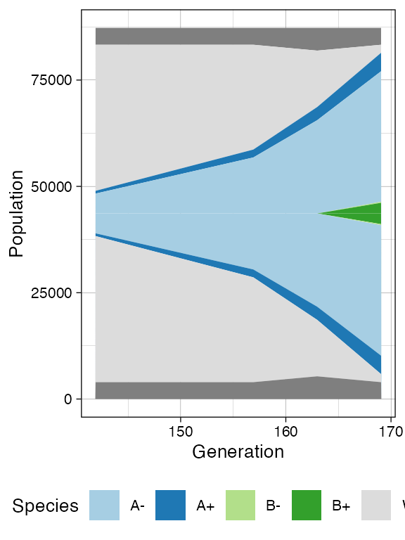
Finally, let us build the ancestor forest of the samples.
library(dplyr)
#>
#> Attaching package: 'dplyr'
#> The following objects are masked from 'package:stats':
#>
#> filter, lag
#> The following objects are masked from 'package:base':
#>
#> intersect, setdiff, setequal, union
library(ggplot2)
forest <- sim$get_samples_forest()
plot_forest(forest) %>%
annotate_forest(forest)
#> Warning: Removed 1 rows containing non-finite values
#> (`stat_edge_link()`).
#> Warning: Removed 1 rows containing missing values (`geom_point()`).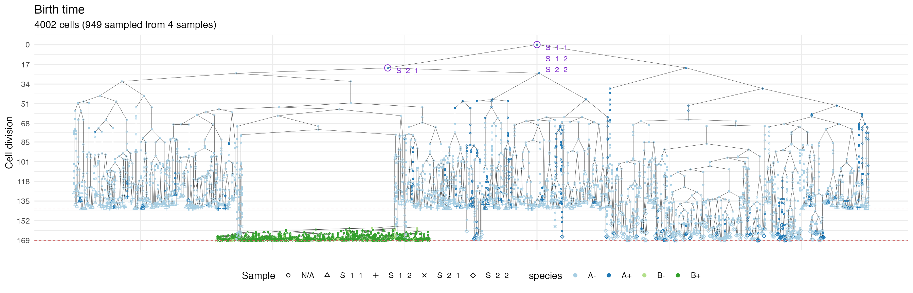
We use a special highlight parameter to add the edges
connecting cells in each sample.
plot_forest(forest, highlight = "S_1_1") %>%
annotate_forest(forest)
#> Warning: Removed 1 rows containing non-finite values
#> (`stat_edge_link()`).
#> Warning: Removed 1 rows containing missing values (`geom_point()`).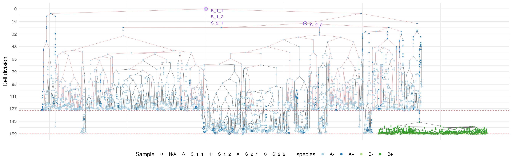
plot_forest(forest, highlight = "S_1_2") %>%
annotate_forest(forest)
#> Warning: Removed 1 rows containing non-finite values (`stat_edge_link()`).
#> Removed 1 rows containing missing values (`geom_point()`).
plot_forest(forest, highlight = "S_2_1") %>%
annotate_forest(forest)
#> Warning: Removed 1 rows containing non-finite values (`stat_edge_link()`).
#> Removed 1 rows containing missing values (`geom_point()`).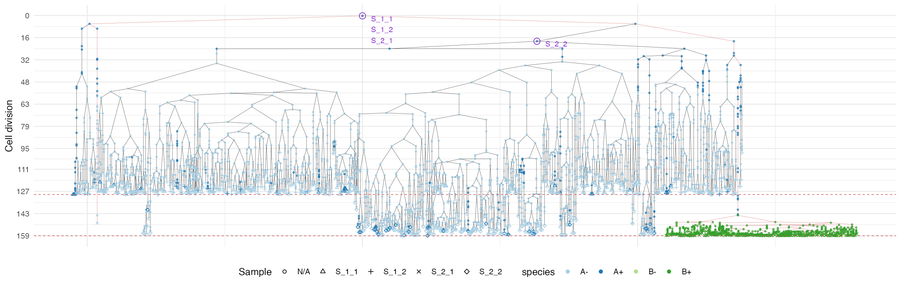
plot_forest(forest, highlight = "S_2_2") %>%
annotate_forest(forest)
#> Warning: Removed 1 rows containing non-finite values (`stat_edge_link()`).
#> Removed 1 rows containing missing values (`geom_point()`).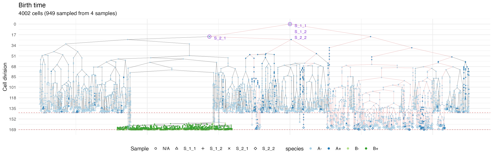
“Border” Growth
We now build a simulation and switch to the “border” growth model.
sim <- new(Simulation, "Border Growth")
# Set the "border" growth model
sim$duplicate_internal_cells <- FALSE
# Set the death activation level to avoid drift
sim$death_activation_level <- 50Let us repeat what we did in the homogeneous growth model example.
# Add a mutant
sim$add_mutant(name = "A",
epigenetic_rates = c("+-" = 0.01, "-+" = 0.01),
growth_rates = c("+" = 0.1, "-" = 0.08),
death_rates = c("+" = 0.1, "-" = 0.01))
sim$place_cell("A+", 500, 500)
# Let the simulation evolve until "A+" consists of 1300 cells
sim$run_up_to_size("A+", 1300)
bbox_width <- 15
# Takes two samples
sim$sample_cells("S_1_1",
bottom_left = c(480, 480),
top_right = c(480 + bbox_width, 480 + bbox_width))
sim$sample_cells("S_1_2",
bottom_left = c(500, 500),
top_right = c(500 + bbox_width, 500 + bbox_width))
# Let the simulation evolve again for 15 time units
sim$run_up_to_time(sim$get_clock() + 15)
# Add a new mutant
sim$add_mutant(name = "B",
epigenetic_rates = c("+-" = 0.05, "-+" = 0.1),
growth_rates = c("+" = 0.8, "-" = 0.3),
death_rates = c("+" = 0.05, "-" = 0.05))
# Let one of the "A" cells generate a cell in "B"
sim$mutate_progeny(sim$choose_cell_in("A"), "B")
# Let the simulation evolve until "B+" consists of 5000 cells
sim$run_up_to_size("B+", 5000)
ncells <- 0.9 * bbox_width * bbox_width
bbox <- sim$search_sample("B", ncells, bbox_width, bbox_width)
sim$sample_cells("S_2_1", bbox$lower_corner, bbox$upper_corner)
bbox <- sim$search_sample("A", ncells, bbox_width, bbox_width)
sim$sample_cells("S_2_2", bbox$lower_corner, bbox$upper_corner)Let us have a look at the simulated tissue and plot the simulation Muller plot.
plot_tissue(sim, num_of_bins = 500)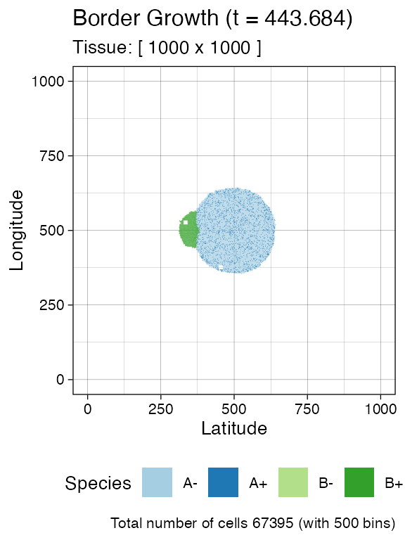
plot_muller(sim)
#> Scale for fill is already present.
#> Adding another scale for fill, which will replace the existing scale.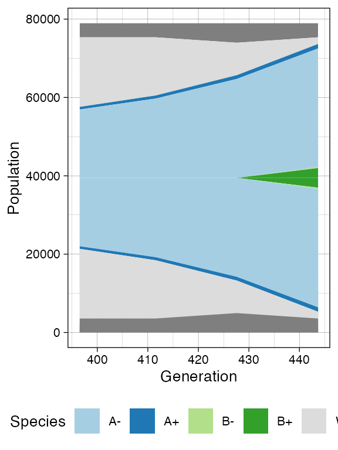
Once more, let us build the ancestor forest of the samples.
forest <- sim$get_samples_forest()
plot_forest(forest) %>%
annotate_forest(forest)
#> Warning: Removed 1 rows containing non-finite values
#> (`stat_edge_link()`).
#> Warning: Removed 1 rows containing missing values (`geom_point()`).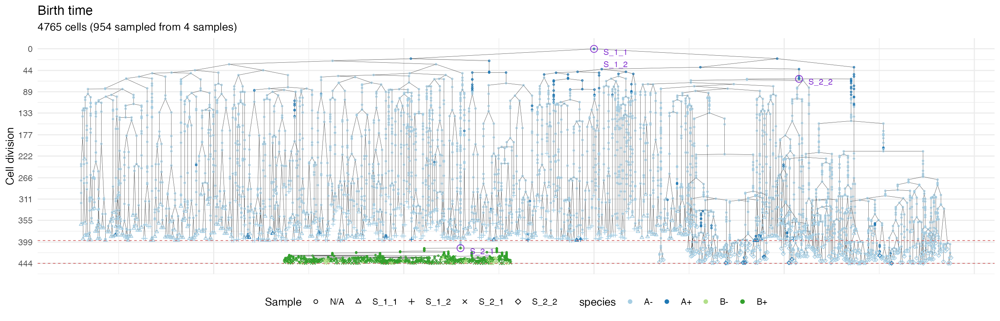
We use a special highlight parameter to add the edges
connecting cells in each sample.
plot_forest(forest, highlight = "S_1_1") %>%
annotate_forest(forest)
#> Warning: Removed 1 rows containing non-finite values
#> (`stat_edge_link()`).
#> Warning: Removed 1 rows containing missing values (`geom_point()`).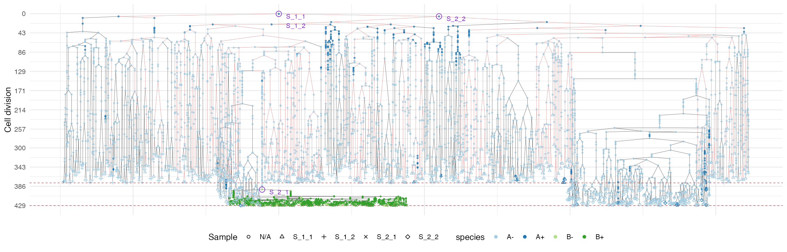
plot_forest(forest, highlight = "S_1_2") %>%
annotate_forest(forest)
#> Warning: Removed 1 rows containing non-finite values (`stat_edge_link()`).
#> Removed 1 rows containing missing values (`geom_point()`).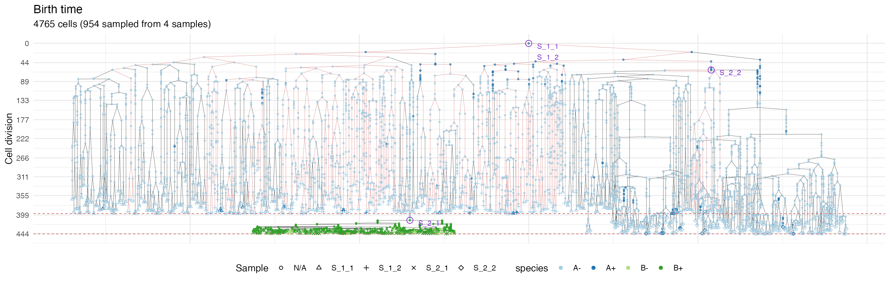
plot_forest(forest, highlight = "S_2_1") %>%
annotate_forest(forest)
#> Warning: Removed 1 rows containing non-finite values (`stat_edge_link()`).
#> Removed 1 rows containing missing values (`geom_point()`).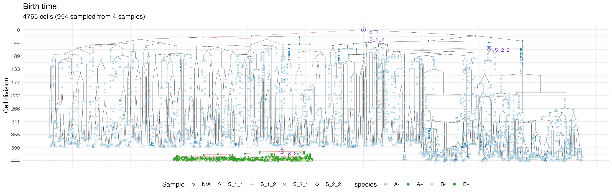
plot_forest(forest, highlight = "S_2_2") %>%
annotate_forest(forest)
#> Warning: Removed 1 rows containing non-finite values (`stat_edge_link()`).
#> Removed 1 rows containing missing values (`geom_point()`).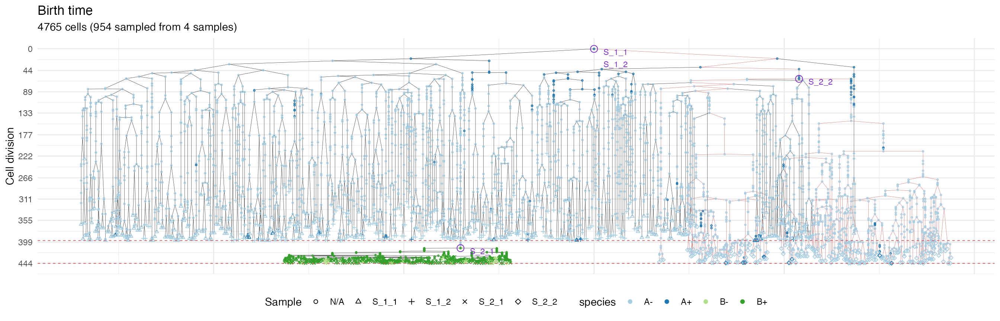
It is easy to see the differences in the analoguous plots of the above examples.
First of all, the cancer growth is slower when subject to the “border”-growth model than when the homogeneous-growth model is used. This is due to the fact that the internal cells cannot duplicate in the former growth model, thus, the number of cells active for duplication is always greater in it, than in the homogeneous-growth model.
Moreover, spacial closeness and closeness in the samples ancestor
forest are strictly related in the “border” growth model, whereas they
appear to be loosely related in the homogeneous growth model. This
features can be easily spotted in the forest plots when the sample
S_2_1 is selected near the external tumor border.
Storing Samples Forests
A samples forest can be saved in a file by using the method
SamplesForest$save.
# check the file existence. It should not exists.
file.exists("samples_forest.sff")
#> [1] FALSE
# save the samples forest in the file "samples_forest.sff"
forest$save("samples_forest.sff")
# check the file existence. It now exists.
file.exists("samples_forest.sff")
#> [1] TRUEThe saved samples forest can successively be load by using the
function load_samples_forest.
# load the samples forest from "samples_forest.sff" and store it in `forest2`
forest2 <- load_samples_forest("samples_forest.sff")
# let us now compare the samples forests stored in `forest` and `forest2`;
# they should be the same.
forest
#> SamplesForest
#> # of trees: 1
#> # of nodes: 4773
#> # of leaves: 953
#> samples: {"S_1_1", "S_1_2", "S_2_1", "S_2_2"}
forest2
#> SamplesForest
#> # of trees: 1
#> # of nodes: 4773
#> # of leaves: 953
#> samples: {"S_1_1", "S_1_2", "S_2_1", "S_2_2"}